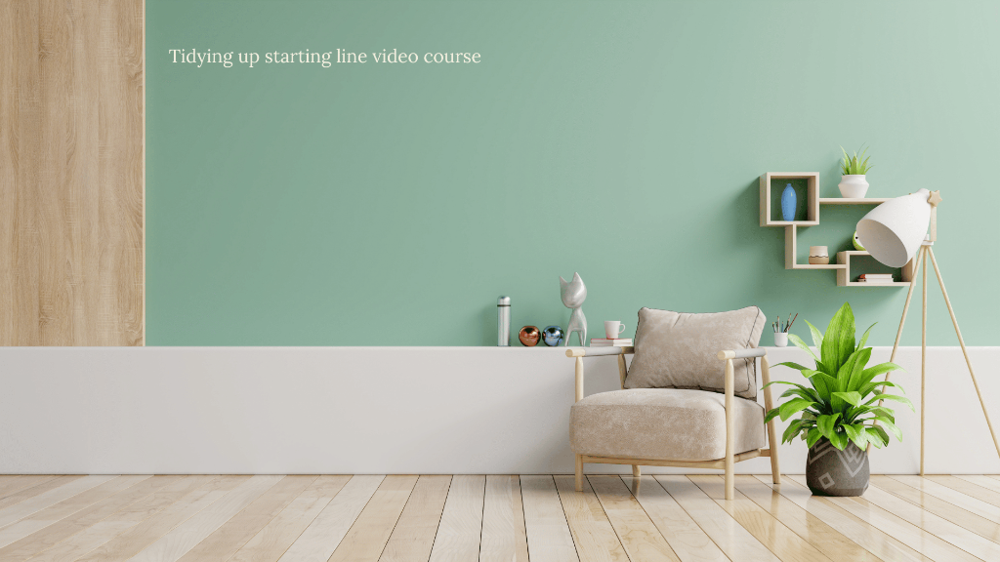
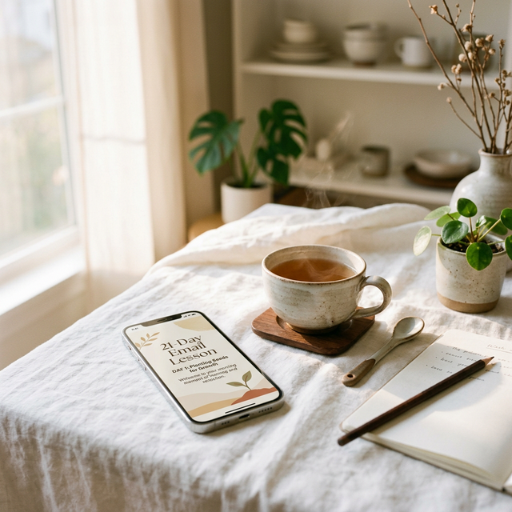
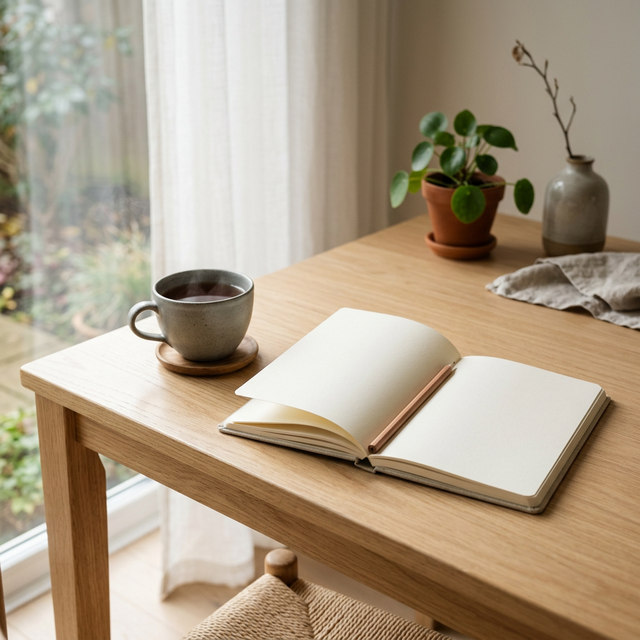

ほっと一息、お片付け相談室
今のあなたに一番近い「お悩み」を選んでみてください。
プロの視点から、あなたにぴったりの「処方箋」をお出しします。
Q1. 片付けても片付けても、すぐ散らかってしまいます…
収納テクニックだけで片付けようとすると、どうしてもリバウンドしてしまいます。実は、根本的な原因は「思考のクセ」にあるかもしれません。
まずは、ノウハウよりも「自分の思考の整え方」を知ることから始めましょう。
Q2. 片付けなきゃと思うのに、全然やる気が起こりません…
「一気に完璧にやろう」としていませんか？完璧を求めるほど、思考が詰まって脳がフリーズし、動けなくなってしまうんです。
あなたはズボラなのではありません。まずは絡まった思考をやさしくほどいて、身軽になってみませんか？
Q3. モノが多すぎて、どこから片付けたらいいかわかりません！
自分のタイプや現在地を知らないまま手をつけるのは、地図を持たずに旅に出るようなもの。人によって「心地よいスタートライン」は全く違いますよ。
まずは難しく考えずゲーム感覚で、自分の「片付け力とタイプ」を知って現在地を把握しましょう！
Q4. そもそも、片付けって「どうやればいい」んでしょうか？
自己流で進めて手が止まっていませんか？自分に合った「正しい進め方と最初の一歩の手順」を知るだけで、スルスルと手が動くようになります。
迷いをゼロにするための、具体的な「最初の一歩」を動画で分かりやすく解説しています。
もっと詳しく相談したいですか？
「私の家の場合はどうすればいい？」
そんな個人的なお悩みは、いつでもLINEでご相談ください。
みほさんの「奇跡のお片付けメソッド」を学習したAIアシスタントが、
24時間365日、あなたのお悩みに LINE の中で優しくお答えします！
おうちで学ぶ片付け


O型気質さん専門
片付け迷子卒業セッション
「一気にやらなきゃ」と完璧を求めるほど、
手が止まっていませんか？
それはズボラなのではなく、
O型気質さん特有の「思考の詰まり」です。
このセッションではいきなり片付けず、
まずはあなたの思考をやさしくほどき、
動ける形に組み替えます。
- 動けなかった「本当の理由」がわかる
- 今日から始める行動が「1つだけ」に絞れる
- 片付けへのプレッシャーがスッと軽くなる（40分）
あなたの「片付けタイプ」診断
簡単な質問に答えるだけで、あなたの片付けの突破口が見つかります。

片付けが苦手な女性のための
『片付け力チェック』無料診断
いまの片付け力の現在地を知って、
今後どうすればいいかが見える！
「え？片付けが苦手なわたしに、
片付け力なんてあるの？」
と思うかもしれません。
でも、正しいやり方とコツを知れば、
あなたも片付けができるようになります。
気軽に直感でチェックして、
自分の隠れた片付け力を知っておきましょう！
つきかわみほ
ホップステップお片付け部主宰 / リリクリメソッド
「片付けはノウハウじゃない。思考を整えることで、一生モノの『片付け脳』が手に入ります」
実は私自身、30年以上も
片付けができずに悩んでいました。
本気で片付けようと思ったきっかけは、
夫の「家に帰ると片付いてなくてイライラする」
という一言です。
一念発起して家事代行を頼むも、
「何をどこにしまいますか？」という言葉に
何も指示ができず、
結局リバウンドして大失敗を経験しました。
そこで初めて、片付けは収納術ではなく
「自分の思考がどう整っているか」なのだと
思い知らされたのです。
過去の私と同じように、
本やSNSを見ても片付けに失敗してきたママたちへ。
潜在意識のリライトを通じて思考のクセを手放し、
自分軸で心地よく暮らせる
「奇跡のお片付けメソッド」をお伝えしています。
よくあるご質問
Q. どこから始めればいいかわかりません。
まずは「片付けタイプ診断」を受けて、
自分の傾向を知ることから
始めるのがおすすめです。
Q. O型以外でもセッションは受けられますか？
もちろんです！全血液型・気質の方に対応しています。
現在は特にO型さん向けのメソッドが好評をいただいております。
Q. 動画講座は視聴期限はありますか？
一度ご購入いただければ、
無期限で何度でも繰り返しご視聴いただけます。